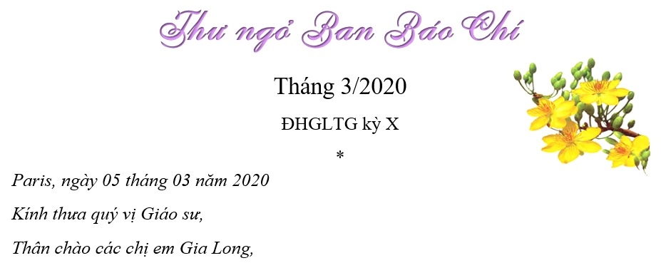

ĐẠI HỘI GIA LONG THẾ GIỚI KỲ X PARIS PHÁP
Thư ngỏ Ban Báo Chí 02-2024
*
Paris, ngày 26 tháng 02 năm 2024
Kính gởi quý vị Giáo sư,
Thân gởi các chị em Gia Long,
Đầu năm Tết Giáp Thìn, Ngọc Mai xin đại diện chị em trong Ban Báo Chí kính chúc quý Thầy Cô, quý thân hữu và chị em Gia Long thân thương một năm mới tràn đầy hạnh phúc, sức khỏe dồi dào và luôn may mắn, an lạc.
Ban Báo Chí Đại hội Paris tiếp tục nhận sáng tác của tác giả bốn phương cho đến ngày 31/5/2024. Chúng tôi có dành khoảng 5 trang cho mỗi Hội GL bạn, đợi các bạn tổ chức tiệc Tết xong rồi gửi bài, các Hội GL đều được ưu đãi như nhau.
Như đã thông báo, Đặc san ĐH X không dầy cộm nhưng cũng không « mỏng lét », bớt nặng cân với quảng cáo, trang giấy giới hạn « dừa đủ xài », hình ảnh trang trí cần thiết và bài chọn đa dạng, khách sẽ thoải mái mang cuốn báo về nhà xem để nhớ lại thời gian « Tây du ký » dự ĐH Paris của mình. Những tác giả có bài được chọn đăng nhưng vì lý do riêng, không có mặt tại Paris, chúng tôi sẽ gửi qua email (pièce jointe dạng pdf) hoặc bưu điện theo yêu cầu. Thời gian gửi đặc san khoảng cuối tháng 9/2024.
Để đáp lại sự tín nhiệm không những với các chị em GL thế giới mà cả với Hội viên của Hội Gia Long Pháp, đã giao phó trách nhiệm chọn lọc và ấn phẩm cuốn Đặc san nên công việc phải đứng đắn, chính trực và minh bạch. Bài vở chỉ nhận chính thức qua địa chỉ e-mail của Ban Báo Chí dưới đây, không nhận qua email cá nhân của người trong BTC hoặc BBC.
Ngọc Mai rất cám ơn Thầy Cô , thân hữu , chị em Gia Long đã, đang và sẽ gởi bài cho Đặc san ĐHGLTG tại Paris được phong phú, BBC của Hội GLP đã có kinh nghiệm mấy chục năm nay, Ngọc Mai tin tưởng sẽ không phụ lòng chờ đợi của quý vị.
Kính chúc và hẹn gặp nhau dịp Đại Hội Paris.
Kính thư,
Thân chào,
Bùi Ngọc Mai (GL73)
Trưởng Ban Báo Chí

Mỗi năm, vào dịp Tết Nguyên Đán, Ban Báo Chí Hội Ái Hữu Gia Long Paris đều xuất bản một giai phẩm Xuân. Đặc biệt cho ĐHGLTG X, Ban BC sẽ dồn hết nỗ lực vào quyển Đặc San của ĐH, hân hoan đón nhận các sáng tác nhạc, thơ, văn…. của quý Giáo sư và cựu nữ sinh Gia Long.
Để Đặc San ĐH được phong phú đồng thời tôn trọng nguồn cảm hứng của tác giả, Ban BC không hạn chế đề tài.
Đặc san ĐH là món ăn tinh thần, là nơi người GL tác giả gửi gấm tâm tình tích trữ bao thập niên hoặc muốn chia sẻ niềm vui, nỗi nhớ mới, cũ ; là nơi người GL độc giả khám phá nhiều điều hay, lạ, lý thú, rồi khi tạm xếp quyển báo, độc giả lắng nghe tâm hồn xúc cảm một cách nhẹ nhàng, thoải mái vì đã tìm lại được thời áo trắng nữ sinh, thời gắn bó dưới mái trường Gia Long yêu dấu, thời của tuổi ô mai, đời chưa nhuốm bụi trần.
Với kỳ vọng nội dung và ấn phẩm cuốn đặc san ĐH X sẽ làm hài lòng quý vị , Ban BC xin lưu ý tác giả vài điểm sau đây :
1. Không gửi bài đã được đăng trên thông tin địa phương hoặc các Hội đoàn.
2. Bài viết không dài quá 5 trang A4, kể cả ảnh đính kèm.
3. Gửi bài viết tay hoặc dưới dạng chữ Arial, khổ chữ 12, chúng tôi không nhận
bài dưới dạng pdf.
4. Bài gửi sẽ không hoàn lại (được chọn hay không). Khi Ban Báo Chí chọn đăng, sẽ chỉ
sửa lỗi chính tả, trường hợp sửa hoặc thu ngắn bài, chúng tôi sẽ liên lạc cùng tác giả.
5. Thời hạn nhận bài từ ngày ra thông báo trên website ĐHGLTG X đến hết
ngày 01 tháng 01 năm 2021 .
Địa chỉ bưu điện : Association Gia Long Paris
22, rue Ampère
92160 ANTONY
France
Địa chỉ email : dhgltgx.baochiparis@gmail.com
Khi nhận được tác phẩm, BBC sẽ hồi âm xác nhận với tác giả.
Rất mong nhận được sự hưởng ứng đông đảo của quý Giáo Sư và các đồng môn Gia Long.
Kính thư,
Chào thân ái,
Trưởng ban Báo Chí nhiệm kỳ 2020-2022
Nguyễn thị Ngọc Hạnh
(GL12 C2 72)